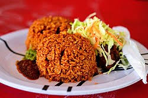

Home
Jollof Rice

Description
Jollof, or jollof rice, is a rice dish from Senegal, West Africa.
It is typically made with long-grain rice, tomatoes, chilis, onions, spices,
and sometimes other vegetables and/or meat in a single pot, although its ingredients and preparation methods vary across different regions.
ingredients
- Rice
- Tomatoes
- Red Bell Peppers(Tatashe)
- Onions
- Chili Peppers
- Tomato Paste
- Cooking Oil
- stock/Broth
- Bay leaves
- Salt and Pepper
- Seasoning Cubes
- Curry Powder
- Garlic and Ginger
Steps
-
Prepare the Pepper Base: Blend fresh tomatoes, red bell peppers, onions, garlic, ginger, and scotch bonnet peppers into a smooth purée.
-
Sauté Aromatics:In a large pot, heat oil and sauté chopped onions until soft. Add the tomato paste and fry until it darkens in color and the oil separates.
-
Cook the Stew:Pour in the blended pepper purée, along with curry powder, dried thyme, bay leaves, and seasoning cubes. Cook the mixture until it thickens and the raw smell is gone, about 10-15 minutes.
-
Rinse the Rice:Wash the rice thoroughly under cold water until the water runs clear to remove excess starch, then drain well.
-
Combine and Cook:Add the rinsed rice and the meat or chicken stock to the pot. Stir gently to combine everything. The liquid level should be slightly above the rice.
-
Steam:Cover the pot tightly with a lid, or a layer of aluminum foil before the lid to trap the steam effectively. Reduce the heat to low and simmer for about 20-30 minutes.
-
Check and Fluff:Check the rice occasionally to stir and prevent burning. If the rice is still hard but the water is gone, add a small amount of water (about 1/4 cup) and continue to steam on low heat.
-
Rest and Serve:Once the rice is tender and all the liquid is absorbed, turn off the heat and let it sit, covered, for a few minutes. Remove the bay leaves, fluff the rice with a fork, and serve hot with your choice of protein and sides.